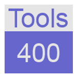

iRPGUnit is an open source plug-in for IBM Rational Developer for i. It enables you to develop and
execute repeatable unit tests for RPG programs and service programs. The current version is @VERSION_NUMBER@.
The iRPGUnit plug-in uses a fork of the
RPGUnit
library, which was started by Lacton back in September 2006. The enhanced library adds an interface that enables RPGUnit to
pass test results to the IBM Rational Developer for i. The development of the library as well as the plug-in was started by
Mihael Schmidt at
RPG Next Gen and is continued by the current
developers.
iRPGUnit uses test suites to group test cases. A test case is a method that starts with 'test' and that is hosted
and exported by a RPG module. A test suite is a service program that consists of one or more modules that exports
test cases. Typically there is a one to one relation between the test suite service program and the module that
contains the test cases.
iRPGUnit features are driven from our ideas and needs, but everybody is encouraged to contribute
suggestions and manpower to improve the power of iRPGUnit.
|
Notice: Starting with version 3.0 iRPGUnit requires IBM i OS 7.1!
Notice: It is important to know that starting with v3.0.0 source member TESTCASE has been moved from source file
RPGUNIT1 to source file QINCLUDE. Currently iRPGUnit is shipped with a proxy member in file RPGUNIT1 to
ensure backward compatibility at compile time. This proxy member will be removed after 31.12.2019 with a
later version of iRPGUnit.
|
The iRPGUnit Project Team |

Tools/400, Thomas Raddatz |
|
The easiest way to install the iRPGUnit plug-in is using Eclipse Marketplace. Search for
iRPGUnit:
But you can also use the official update site at GitHub:
Last but not least you can download the local update site as a zip file and install iRPGUnit from there:
Refer to the iRPGUnit
help page for detailed installation instructions.
The iRPGUnit beta version is available here:
Refer to the iRPGUnit
help (beta version) page for detailed installation instructions.
{kind=link}
{kind=link}
{kind=link}
{kind=link}